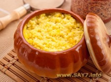

Пшенная каша с тыквой
Пшено, 1 стакан
Вода H
2
O или Aqualife
®
, 2 стакана
Молоко,
1,5 стакана
2 стакана
Масло сливочное, 3 ст. л.
Тыква, около 300г
Соль, по вкусу
<Сахар демерара, посипать сверху
Примечания:
Пшено необходимо перебрать
Тыкву нарезать кубиками 1х1 см
Кашу перемешівать не надо
